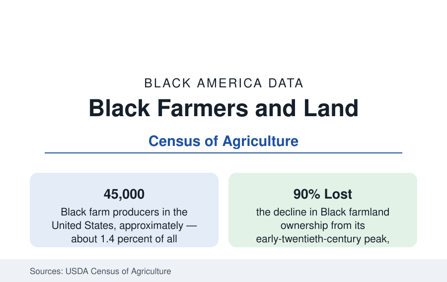

Black Business
Black Farmers: Land, Loss, and the Remaining 45,000
Black farmers are about 1.4 percent of America's farmers and farm a fraction of the land their grandparents held. The USDA Census of Agriculture data.

About 45,000 of America's 3.4 million farm producers are Black — roughly 1.4 percent — farming on the order of four to five million acres, concentrated in the Southeast. A century ago the figures stood at their inverse image: nearly a million Black farmers at the peak count, working roughly 15 million acres of owned land and much more as tenants, in what was then the largest single occupation of Black America. The land and farmer counts since — a decline of about 90 percent in Black-owned farmland across the twentieth century — constitute the largest documented asset loss in this reference. This article reports the agricultural census data.
The Peak and the Long Decline
The Census of Agriculture's historical series trace the arc. Black farm ownership peaked in the decades after emancipation's landless start: families purchased marginal land at high prices, cleared it, and built the farm base that by the 1910s reached its maximum extent, concentrated in the Southeast's cotton belt with significant holdings in Texas, Oklahoma, and the border states. The decline that followed had several documented mechanisms operating together: the boll weevil and the cotton economy's collapse; the Great Migration's labor pull; credit exclusion from the public and private lenders on whom farming depends; partition sales of heirs' property — land passed without wills, fractionated among dozens of heirs, and forced to sale by any single fractional owner or outside buyer, the mechanism the legal literature identifies as the largest single channel of loss; and the documented discrimination in federal farm lending that later became the subject of the Pigford class action and its government settlement, the largest civil-rights settlement of its kind.
The Present Population of Black Farmers
The most recent Census of Agriculture describes the remaining population: roughly 45,000 Black producers, older than the national farmer average (whose own median age approaches sixty), farming smaller operations on average — Black-operated farms average well under half the acreage of the typical American farm — and concentrated in beef cattle, hay, vegetables, and specialty crops alongside the traditional row crops. Geographically, Texas holds the largest count of Black farmers, followed by the Deep South states; the Black Belt counties of this reference's census profiles remain their heartland, where in several counties Black farmers are still a large share of all farmers. Beginning-farmer counts show modest growth in the recent censuses, and the producer definition's expansion (counting multiple producers per farm) complicates trend comparisons — the statistical footnotes the USDA itself attaches to the series.
Heirs' Property: The Legal Mechanism
Heirs' property deserves its own accounting because it is the loss mechanism still operating. When a landowner dies without a will, the land passes to heirs as tenants in common — each holding an undivided fractional interest, none able to mortgage, improve with federal assistance, or in many programs even enroll the land, since it lacks a clear single title. Across generations the fractions multiply into the dozens or hundreds. A single heir — or an outside party who buys one heir's share — can force a partition sale of the whole, historically at courthouse auctions returning below-market prices. Studies of the Black Belt estimate heirs' property in a large share of Black-owned rural land in the region. The policy response documented in the data: a uniform partition law adopted in a growing list of states that adds appraisal, notice, and buyout protections, and a federal relending program to help heirs consolidate title — both recent enough that their effect belongs to future censuses.
Institutions and the New Generation
The support infrastructure is distinctive: the Federation of Southern Cooperatives, founded in the 1960s, remains the central Black farm institution — cooperative development, land retention legal work, and credit union services across the Black Belt. The 1890 land-grant universities (the second Morrill Act's Black institutions, including Tuskegee, Prairie View A&M, Florida A&M, and North Carolina A&T) carry the research and extension mission, funded historically at the documented discount to their 1862 counterparts that the education section's funding-gap data record. Market channels for the new generation — direct-to-consumer sales, agritourism, specialty and organic production, and procurement programs — appear in the census data as growth categories among younger Black producers, whose average operation is small, diversified, and near a metro market.
Reading the Farm Data
The farm data are the wealth data in their oldest form: land was the first asset Black America accumulated and the one whose loss is most completely documented. The remaining figures — 45,000 producers, a few million acres, a median operation a fraction of the national size — describe both the residue of that loss and a living sector with a young entrant cohort. The quinquennial census of agriculture is this article's update source; between its readings, the land-retention casework of the cooperative federation is the running record.
More in Black Business
Black-Owned Businesses: Counts, Receipts, and the Representation Gap
About 161,000 Black-owned employer firms and three million solo ventures: how the Census Bureau counts Black business ownership, where firms concentrate, and the gap between population share and business share.
Black Median Net Worth: The Wealth Gap in Federal Reserve Data
The Federal Reserve puts Black median family net worth at $44,900, against $285,000 for White families — about 16 cents on the dollar. The widest gap in economic data.
Black Buying Power: The $1.8 Trillion Consumer Economy
Black buying power is estimated at about $1.8 trillion — larger than the economy of most nations. What the figure measures, who produces it, and what it buys.
Source: USDA, National Agricultural Statistics Service, Census of Agriculture; USDA Economic Research Service; Federation of Southern Cooperatives reports.